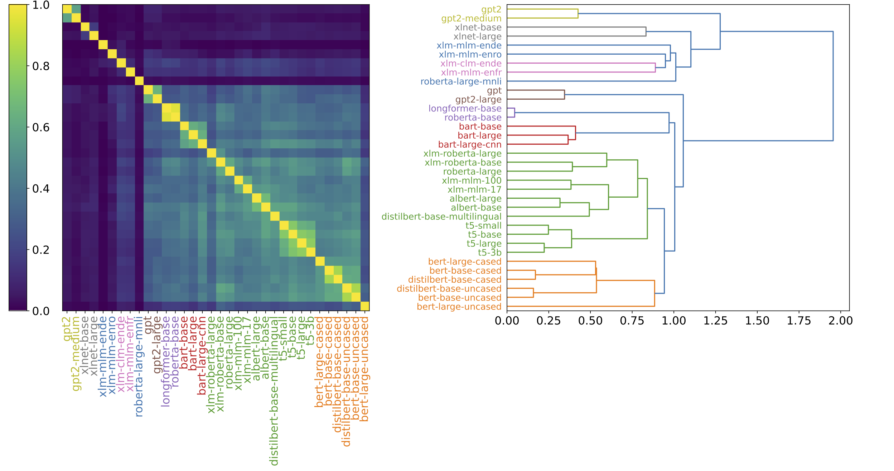
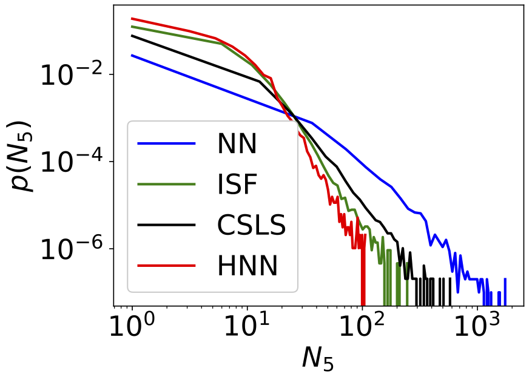
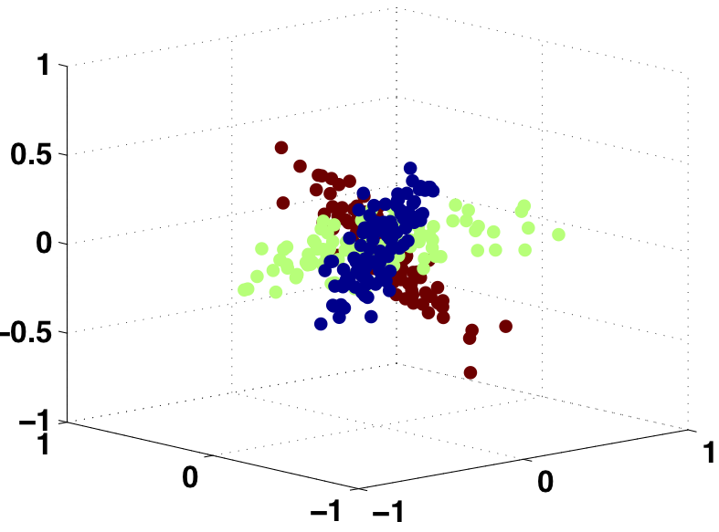
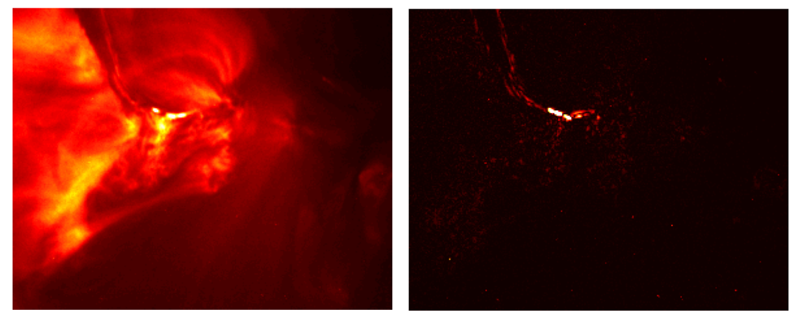

Jiaji Huang – Research Summary
About this Page
Blocks on this page summarize my most representative research works. Each of them is a blend of theory and applications, unveiling and exploiting the property of high dimensional spaces.
Bertology: Interpret and Improve Language Models
|  | Pretrained Language Models (LM), e.g., BERT, are very successful. However, it is still mysterious why they can generalize so well. The joint force of interpretability and language modeling has created a new research community called Bertology. Probing tasks are widely used in Bertology. That is, applying an LM to a probing task. If the LM works well, then we would agree that task-relevant information (e.g., syntatic, semantic) is captured. In other words, “probing” is an extrinsic approach. It attempts to understand a blackbox (the LM) via another box (the probing task) that is “less black”. Different from probing, we take a more intrinsic approach, through comparing and contrasting the LMs. We discover interesting similarity patterns among a zoo of LMs. The left figure is one visualization of the similarities among 34 language models (downloadable from huggingface model hub). These intriguing patterns hint on many possibilities of practical interests, e.g., picking the right LM for your tasks (see our Neurips2021 paper). In addition, intriguing similarity pattern also exists inside the building blocks of an LM. For example, among attention heads. One immediate follow-up question is, “can we prune the LMs more effectively by taking advantage of this similarity pattern?” This onging effort connects to many fields in machine learning and NLP. Other than the above mentioned applications, it also seeks to answer fundamental questions in transferability and learning dynamics. |
Paper(s)
J. Huang, Q. Qiu, and K. W. Church. Exploiting a Zoo of Checkpoints for Unseen Tasks. In Neurips, 2021. [PDF]
X. Cai, J. Huang, Y. Bian, K. W. Church. Isotropy in the contextual embedding space: Clusters and manifolds. In ICLR, 2021. [PDF]
Y. Bian, J. Huang, X. Cai, J. Yuan and K. W. Church. On attention redundancy: A comprehensive study. In NAACL, 2021. [PDF]
Retrieval: Beyond Nearest Neighbor Search
|  | Nearest Neighbor (NN) search may be the most general and widely applied retrieval method in multi-dimensional feature spaces. However, NN is often degraded by a phenomenon called hubness. Hubness is a tendency in high dimensional space that some data points, called “hubs”, are suspiciously close to many others. As a result, NN search may retrieve these “hubby” points more often than they should be. Earlier works, Inverted SoFtmax (ISF, 2017) and Cross-domain Similarity Local Scaling (CSLS, 2018) are heurestics that mitigate hubness and improve upon NN for bilingual lexicon induction tasks. Nevertheless, still missing are a rigorious formulation and a thorough understanding of the hubness-reduction problem. The proposed Hubless Nearest Neighbor (HNN) search hinges upon an Equal Preference Assumption. We observe that the assumption approximately holds for bilingual lexicon induction between languages that share their origins. Essentially, it is a constraint that all items in the gallery are equally likely to be retrieved. The retrieval task is then re-formulated into a linear assignment problem. By relaxing its objective function, we can further derive an efficient solver that is parallelizable over GPUs. |
The above figure is a comparison of measures of hubness after applying NN, ISF, CSLS and the proposed HNN. A long tail indicates that there exist some items being retrieved for excessive number of times. HNN has the shortest tail, therefore the most reducion of hubness.
Hubness is still an open problem that daunts the high dimensional feature space. This research may impact other areas where retrieval is involved, e.g., few-shot learning, epsodic memory models.
Paper(s)
J. Huang, Q. Qiu and K. W. Church. Hubless Nearest Neighbor Search for Bilingual Lexicon Induction. In Annual Meeting of the Association for Computational Linguistics (ACL), 2019. [PDF] [Supplementary] [Code] [Blogpost]
J. Huang, X. Cai and K. W. Church. Improving Bilingual Lexicon Induction for Low Frequency Words. In proceedings of the 2020 Conference on Empirical Methods in Natural Language Processing (EMNLP), 2020. [PDF] [Talk]
Robustness and Generalization of Deep Neural Networks
Deep neural networks have proved very successful in domains where large training sets are available, but when the number of training samples is small, their performance suffers from overfitting. To reduce overfitting, people have proposed various data independent regularizations, e.g. weight decay, dropout. In contrast, this series of works try to justify data dependent regualarizations. The key assumption is that input data have interesting “local” structure, preserving which after the “deep” transformation may mitigate overfitting. An important theoretical tool we use is |
Paper(s)
W. Zhu, Q. Qiu, J. Huang, R. Calderbank, G. Sapiro, and I. Daubechies. LDMNet: Low dimensional manifold regularized neural networks. IEEE Conference on Computer Vision and Pattern Recognition (CVPR), 2018. [PDF] [Code]
J. Huang, Q. Qiu, R. Calderbank and G. Sapiro. GraphConnect: A Regularization Framework for Neural Networks. arXiv preprint arXiv:1512.06757, 2015. [PDF]
J. Huang, Q. Qiu, R. Calderbank and G. Sapiro, Discriminative Robust Transformation Learning. Neural Information Processing Systems (NIPS), 2015. [PDF]
J. Huang, Q. Qiu, R. Calderbank and G. Sapiro, Geometry-aware Deep Transform. International Conference on Computer Vision (ICCV), 2015 [PDF]
Theory and Applications of Subspace Models
|  | Principal angle is a fundamental measure of the difference between two subspaces. Using the principal angles, we could analyze classification error for data that are modeled as (a collection of) subspaces. When the mismatch between the signal and the subspace model is vanishingly small, the probability of misclassification is determined by the product of the sines of the principal angles between subspaces. When the mismatch is more significant, the probability of misclassification is determined by the sum of the squares of the sines of the principal angles. Reliability of classification is derived in terms of the distribution of signal energy across principal vectors. One application of the above result is to enhance discriminative feature for face recognition. |
|  | Union of affine Subspaces (UoS) is a powerful model to approximate low dimensional manifold embedded in high dimensional space. However, in real world applications, the data manifold is often noisy, with missing observations, and dynamically evolving. Albeit these challenges, we show that an UoS can still be learned by leveraging subspace tracking with missing data, multiscale analysis techniques for point clouds, and online optimization. Residual of the UoS approximation is a nice statistic that can be used for anomaly detection. An example is detection of hidden solar flares from noisy sensor data. |
Paper(s)
J. Huang, Q. Qiu and R. Calderbank. The Role of Principal Angles in Subspace Classification. IEEE Transaction on Signal Processing, vol. 64, no. 8, 2016, 1933-1945. [PDF]
J. Huang, Q. Qiu, R. Calderbank, M. Rodrigues and G. Sapiro, Alignment with Intra-class Structure can imporve classification. 40th IEEE International Conference on Acoustics, Speech and Signal Processing (ICASSP), 2015. [PDF]
Y. Xie, J. Huang, and R. Willett. Changepoint detection for high-dimensional time series with missing data, IEEE Journal of Selected Topics on Signal Processing (J-STSP), vol. 7, no. 1, pp. 12-27. 2013. [PDF]
Y. Xie, J. Huang, and R. Willett. Multiscale online tracking of manifolds. 2012 IEEE Statistical Signal Processing Workshop (SSP). [PDF]